Drumlab TUTORIAL
A house beat in about two minutes: kick, snare, hat. Start here.
1The whole thing
123456789101112131415161Sound 12Sound 23Sound 3
2A new project
Hold
HOME to open the projects.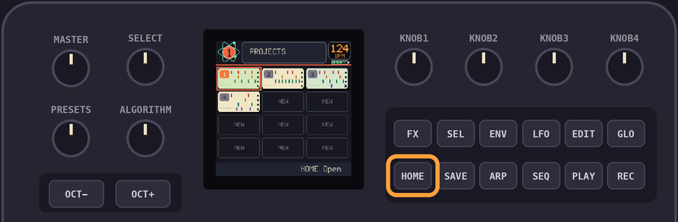
Turn
SELECT to a NEW one.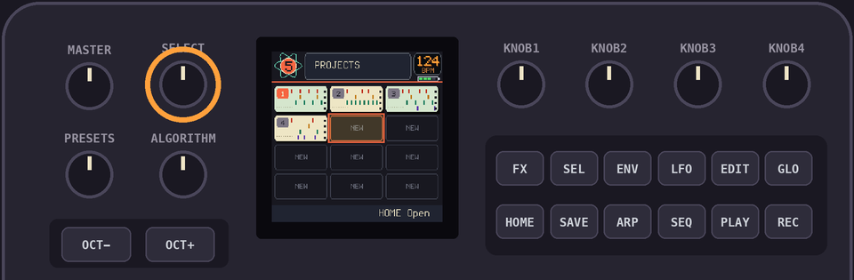
Tap
HOME to open it.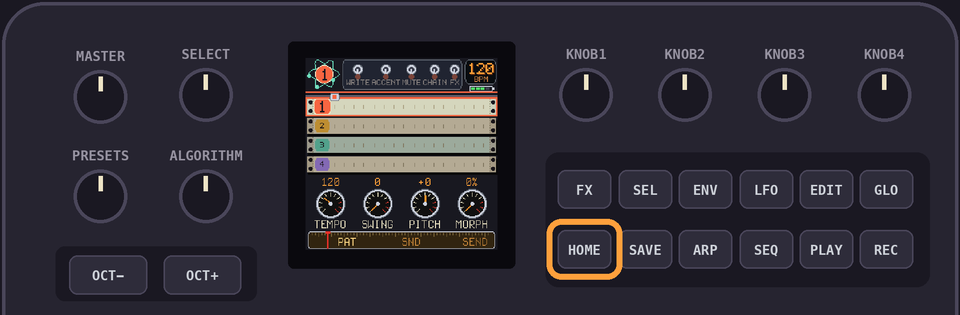
3The kick
Tap
REC. Now the 16 keys are the 16 steps.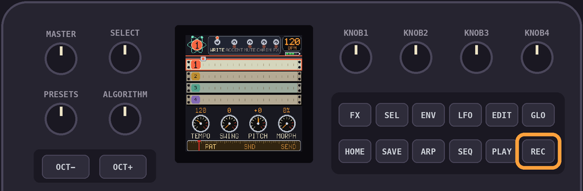
Press keys 1, 5, 9 and 13. That's the kick on every beat.
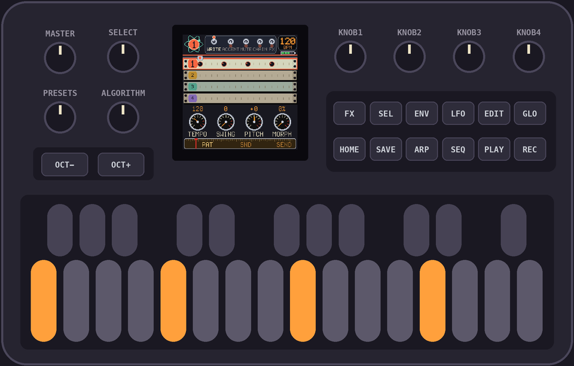
PROTIP: Press a step again to take it away. Hit
PLAY first if you want to hear it as you build it.4The snare
Turn
PRESETS once to pick sound 2.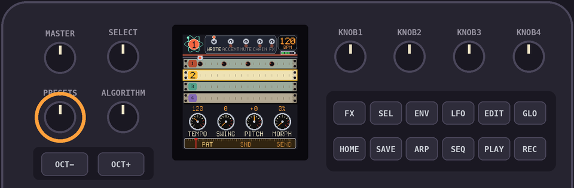
Press keys 5 and 13.
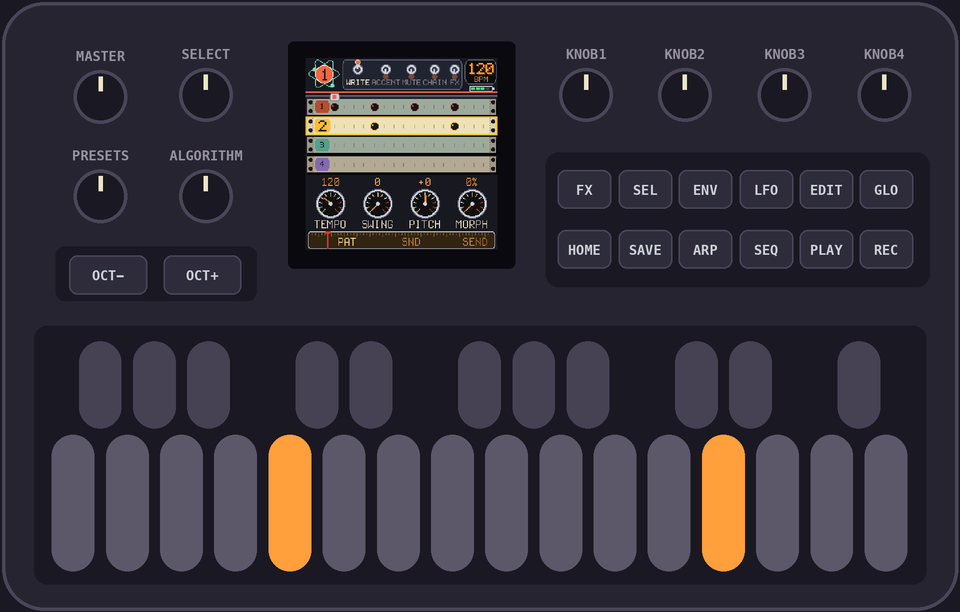
5The hats
Turn
PRESETS once more, for sound 3. Press keys 3, 7, 11 and 15. Right between the kicks.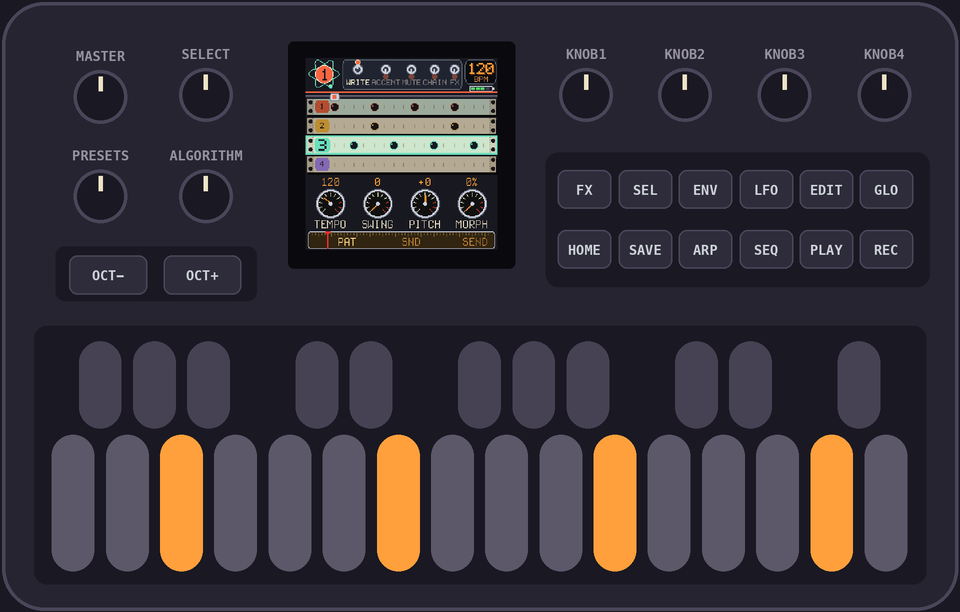
6Play it
Tap
REC to leave WRITE, then hit PLAY. That's a house beat. You made that!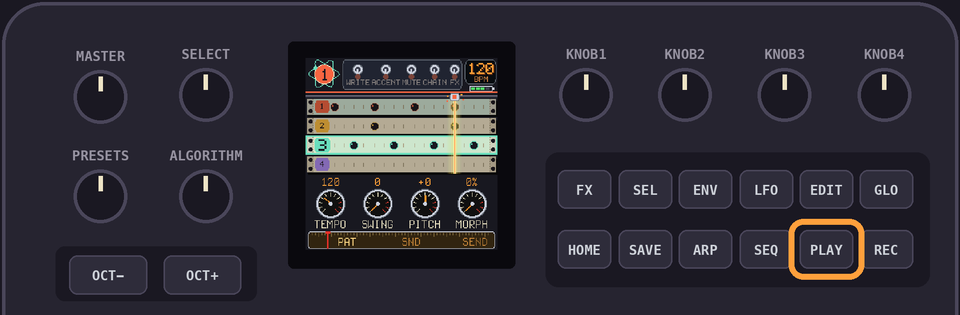
7Make it yours
Turn
KNOB 1 up to 128.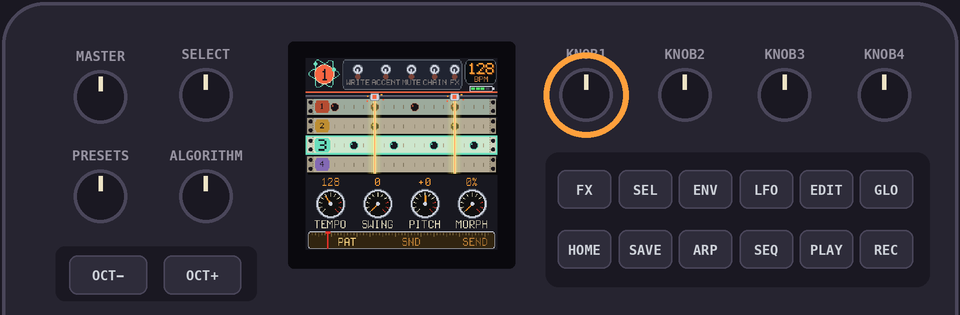
8Accents
Tap
ENV, then keys 5 and 13. The ring means louder.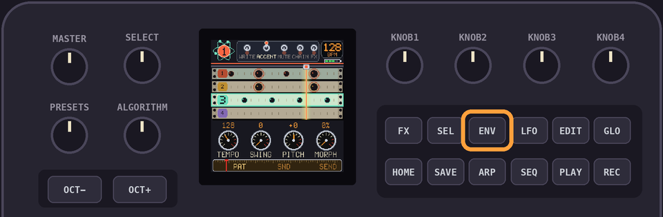
Tap
ENV again when you're done.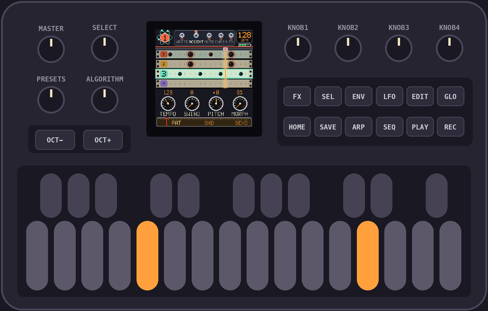
9Keep it
Hit
PLAY to stop, then SAVE. It would have saved itself a few seconds later, but now you know.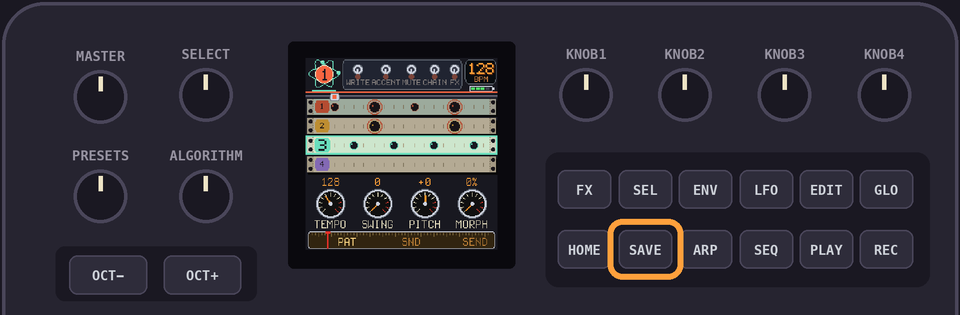